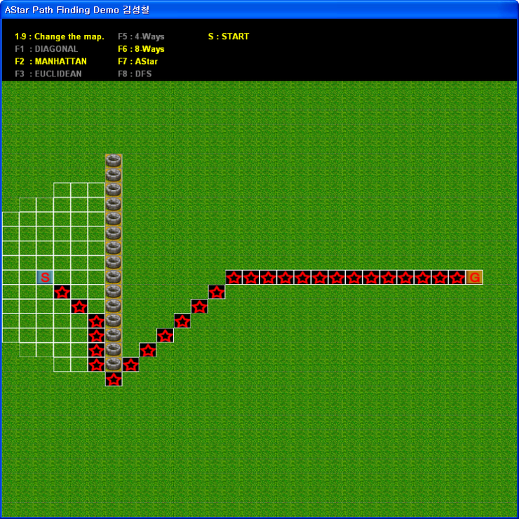

알림 이 글은 제 네이버 블로그 에서 아카이빙을 위해 가져온 글입니다. 그 당시 svn 같은 소스 관리툴을 사용하지 않아서 코드 히스토리를 남기지 못한게 아쉽네요.
github https://github.com/skyfe79/AStar

J모 게임 회사에 면접을 볼 때 만들었던 Astar 데모 프로그램.
다른 회사에 오긴 했지만 만들면서 꽤 재미있는 시간을 보낸 기억이…
지금은 HPA* HAA* 등을 공부하면서 항상 개선점이 발생하고 해결하면서
멋진 솔루션이 탄생함을 깨닫는다. 이런 개선점과 해결방법을 고민하는 자세를 가져야겠다.